Задание №11
Инструкция к выполнению
Задание 11 является одним из самых простых. Достаточно помнить формулы и вид функций, и немного разбираться в графиках.
Сначала давайте посмотрим на пустой график:
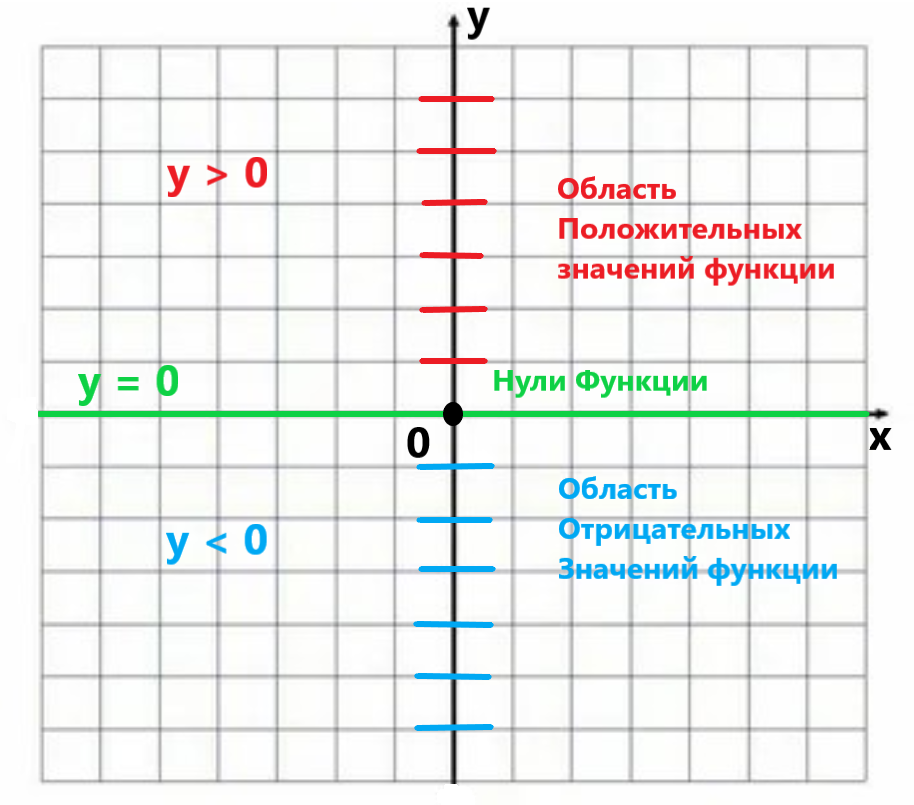
Графики функций строятся на координатной плоскости. Координаты мы задаём с помощью двух прямых ОХ и ОУ, которые перпендикулярны друг другу (пересекаются под углом 90°). Точкой пересечения этих прямых является центр координат. Каждая координатная прямая имеет направление (в какую сторону увеличиваются числовые значения) и единичный отрезок (промежуток между двумя соседними целыми числами).
Так же необходимо понимать, что такое функция. Проведём простую аналогию. В чём заключена функция мясорубки на кухне?
В математике в роли «мясорубки» выступают функции, вместо куска мяса значение переменной x, фарш — значение переменной y. То есть, цепочка действий следующая:
Если взять получившиеся пары чисел (x, y) и нанести их на координатную плоскость, то точки будут выстраиваться в линию определённой формы.
Теперь можно рассмотреть каждую функцию по отдельности.
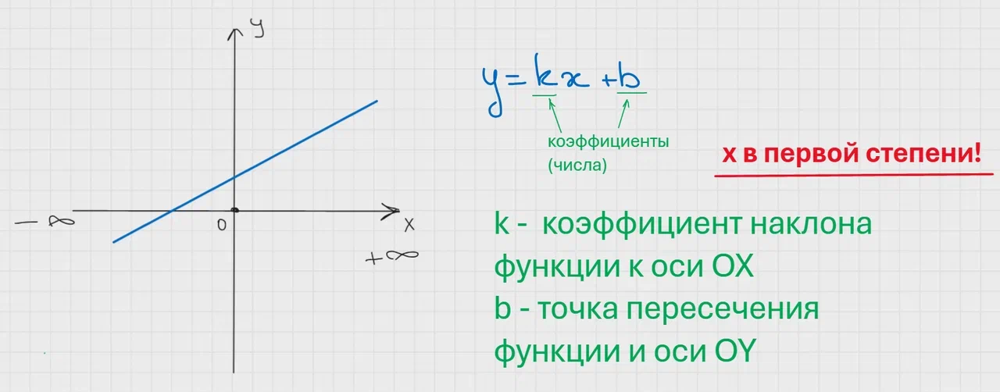
Первая функция, с которой знакомят школьников — линейная. Название говорящее. Все точки выстраиваются на графике в прямую линию. Вид любой функции задают коэффициенты (числа). У линейной функции их два: k, b.
k — задаёт наклон прямой к оси ОХ, а b — является координатой пересечения оси ОУ с функцией (0; y). Из-за того, что коэффициенты могут быть любыми, то и прямую на графике можно расположить бесконечным количеством способов.
Если нужно построить линейную функцию на графике, берём два любых числа за x и подставляем их в уравнение функции. Таким образом, получаем координаты двух точек. Этого достаточно для построения прямой.
Вообще говоря, глядя на график можно определить знак коэффициентов, а иногда даже их точное значение.
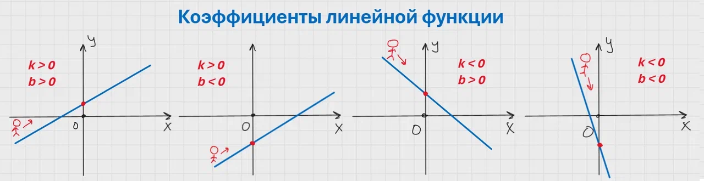
Для удобства и простоты давайте поставим с левой стороны человечка и отправим его по направлению оси ОХ. Если он будет подниматься — функция возрастает, коэффициент k положительный, а если спускаться, то функция убывает, коэффициент k отрицательный.
Если на графике видно, в какой точке функция пересекла ось ОУ, значит мы точно можем определить коэффициент b, либо если единичных отрезков не дано, то смотрим, где находится точка пересечения, над или под осью ОХ. В этом случае получится определить только знак коэффициента.
Теперь рассмотрим случаи, когда коэффициенты не имеют знака. Или когда они равны нулю.
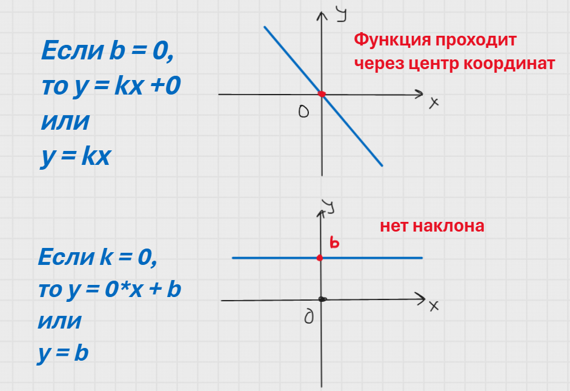
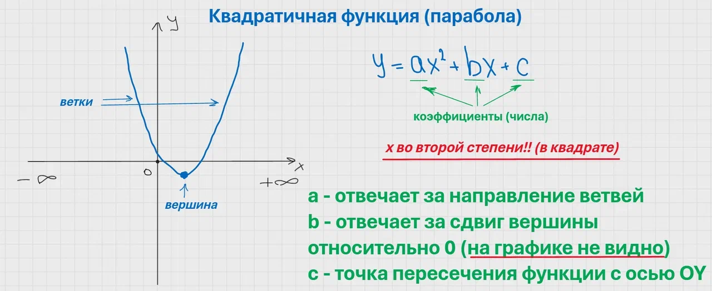
Квадратичная функция или парабола имеет вид подковы на графике. Её ветки симметричны относительно своей вершины.
Если знаки коэффициентов a и c ещё на графике можно увидеть, то сказать что-то определённое про b, глядя на график нельзя!
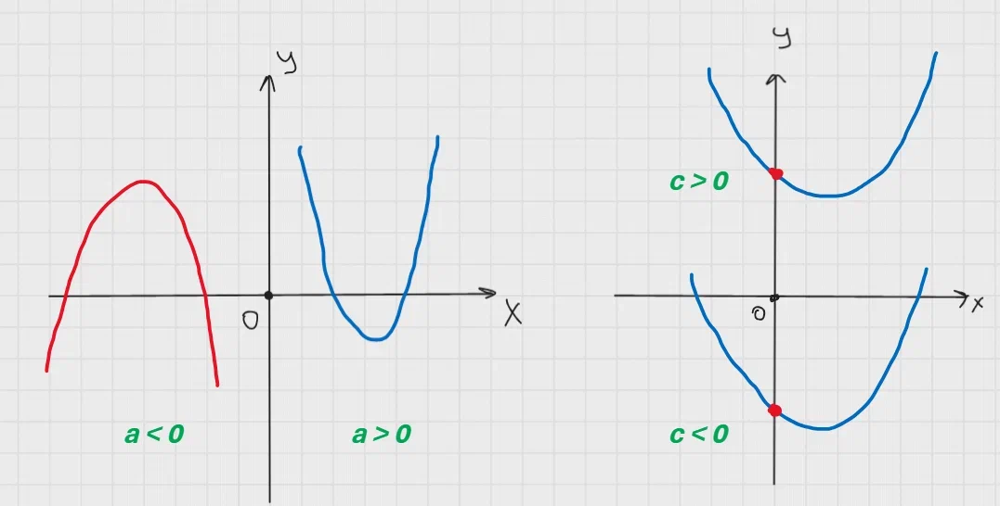
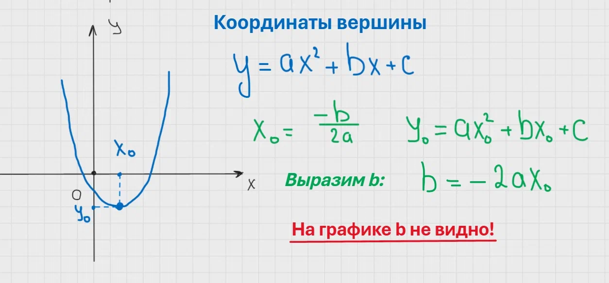
Коэффициент b входит в формулу нахождения вершины параболы. Он означает лишь, что вершина сдвинута по оси ОХ относительно 0.
Когда в задании попадаются три параболы, как правило, вносит сомнения определение коэффициента b. В таком случае, проще всего будет взять координаты любой точки, которая лежит только на одной параболе, и подставить их в формулу. Там, где равенство будет верное — и есть правильный ответ.
Например:
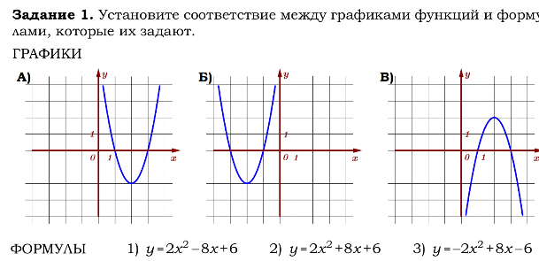
По направлению ветвей сразу понятно, что графику «В» соответствует формула 3. А остальное не ясно. Поэтому координаты точки в помощь:
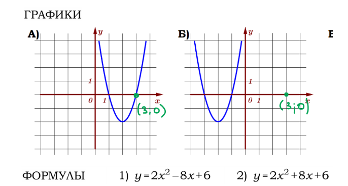
Например, возьмём точку (3;0). Она лежит на параболе «А» и не лежит на «Б», в таком случае, одно из равенств должно быть верно и соответствовать параболе «А», а другое — нет.
Подставим координаты выбранной точки в формулы:
В первой формуле получаем 0 = 0 — верное равенство, значит параболе «А» соответствует формула 1. Во второй формуле равенство неверное: 0 = 48. По остаточному принципу определяем, что к параболе «Б» относится формула 2.
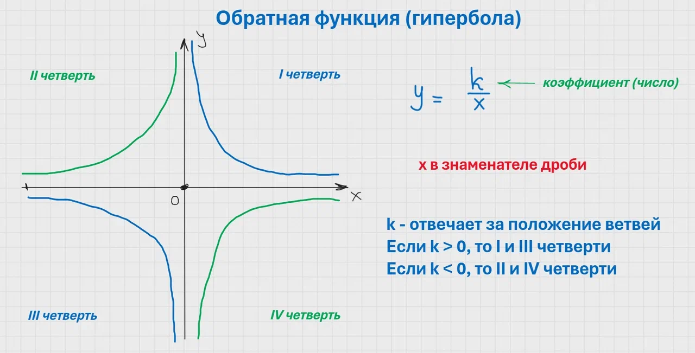
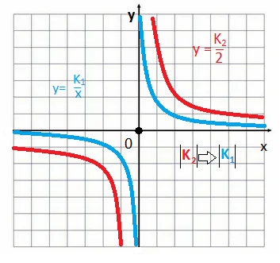
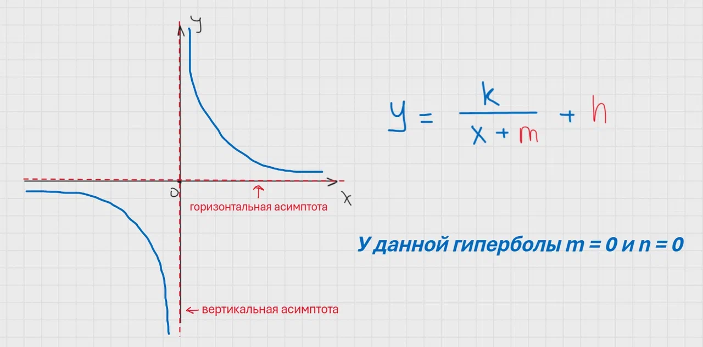
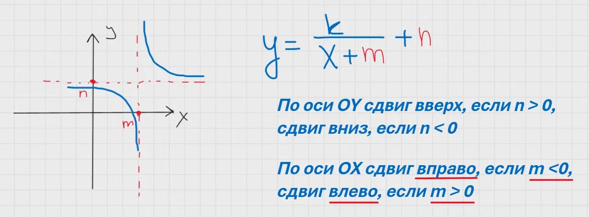
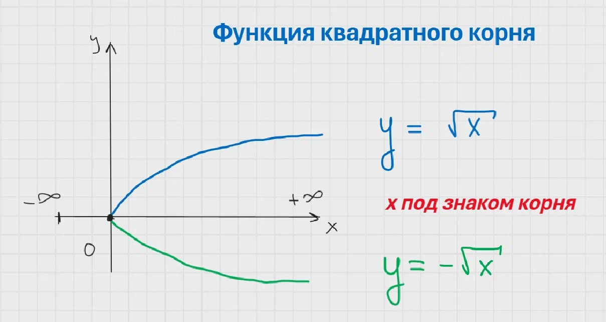
Краткая памятка по функциям:
- Линейная функция y = kx + b — прямая линия. k > 0 — возрастает, k < 0 — убывает. b — точка пересечения с осью OY.
- Квадратичная функция y = ax² + bx + c — парабола. a > 0 — ветви вверх, a < 0 — ветви вниз. c — точка пересечения с осью OY.
- Вершина параболы — x₀ = -b/(2a), y₀ = ax₀² + bx₀ + c.
- Чтобы определить знак коэффициента b, можно взять любую точку на графике и подставить в формулу.
- Графики читаются слева направо.